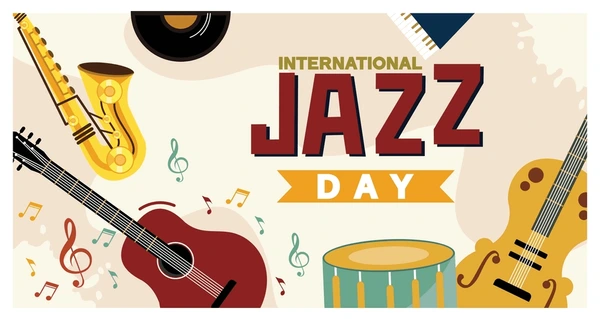
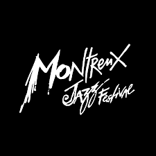

Festival Internacional de Jazz
Un evento que reúne a los mejores artistas del jazz mundial. Fecha: 20 de Julio 2026, Ciudad de México.
Más información
Tributo a Frank Sinatra
Una noche especial dedicada al legado de Sinatra. Fecha: 5 de Agosto 2026, Teatro Nacional.
Reservar entradas
Red Mundial de Jazz
Celebración global organizada por la UNESCO. Fecha: 30 de Abril 2026, Chicago y más de 190 países.
Reservar entradas
Festival de Jazz de Montreux
Un evento icónico en Suiza. Fecha: 3 al 18 de Julio 2026.
Reservar entradas
Festival de Jazz y Artes de Santa Lucía
Un evento que reúne jazz y artes plásticas. Fecha: 30 de Abril al 10 de Mayo 2026.
Reservar entradas
Homenaje a Louis Armstrong
Festival en Nueva Orleans celebrando la alegría y legado de Armstrong. Fecha: 1 y 2 de Agosto 2026.
Detalles